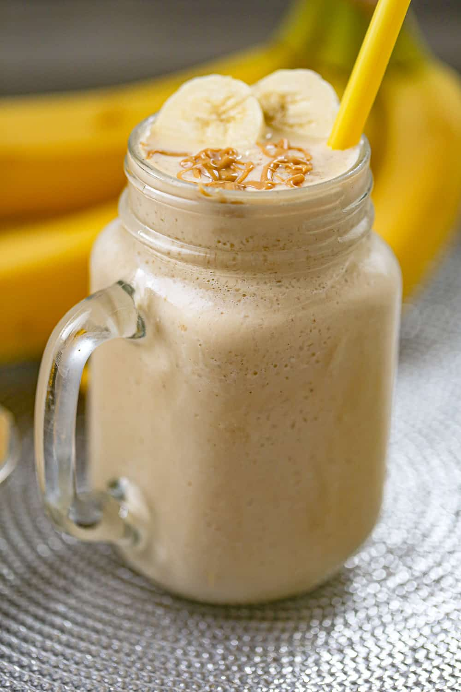

Protein Shake

Description
This protein shake is no ordinary protein shake, if taken once a day preferably after a good workout you are sure to see a increase in weight in no time!
On top of that it is absoluely delicious and easy to make only requiring 6 ingredients and I can promise that you wont get tired of having it every day.
If you are struggling to take in your recommended daily protein intake look no further this is the shake for you.
Ingredients
- 1 cup of coconut milk
- 8 ice cubes
- 1 whole banana
- 1 tbsp of honey
- 2 tbsps of peanut butter
- 44 grams of vanilla whey protein powder
Steps
- Grab any type of blender and gather all the necessary ingredients.
- Measure 1 cup of coconut milk and pour it into the blender.
- Get 8 ice cubes and throw them in the blender this amount will give the shake the right amount of thickness.
- Peel a whole banana chop it up into small pieces so the blender has an easier time blending.
- Squeeze around a tablespoon of honey in, this amount doesnt have to be exact.
- Get a scoop of vanilla whey protein powder and dump it in.
- Put the lid on your blender and give it a bit of a shake just to mix everything up and blend till no chunks remain.
- Heat up around 2 tablespoons of peanut butter in the microwave and drizzle ontop to finish off the shake.